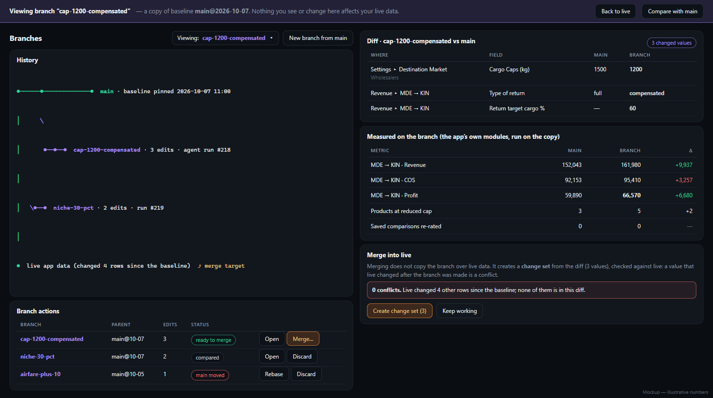
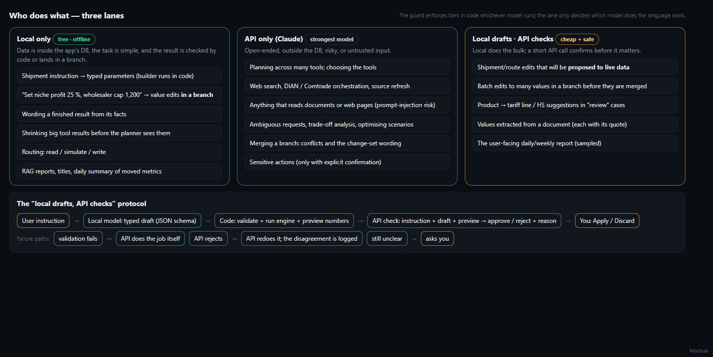

agent_development.md · documentation only, no agent code exists yetAn in-app agent that can explain any number in the app, run simulations (e.g. “cap wholesalers at 1,200 kg and make the return compensated — what happens to the Medellín → Kingston profit?”) and, when you approve, update values in the modules: route settings, Market Opportunity settings and priority lists, saved tax multipliers, source refreshes. It reuses the Claude tool-use loop that the sidebar Assistant already has and adds what is missing: more tools, a safety guard, simulations and a way to undo.
main and branchesBorrowed from Git. The baseline is main: a pinned snapshot of the database. Every simulation opens a branch — a copy of that file — and the agent plays with the values in the branch only.
| Step | What happens |
|---|---|
| Create | Copy of main (a fraction of a second). Edits go through the same validated functions the screens use, and each one is logged (table, row, before, after, reason). |
| View | Choose “Viewing: branch” — every screen then shows the branch’s data, because requests carry an X-Agent-Branch header. A coloured banner stays on screen so a branch is never mistaken for live data. |
| Measure & compare | The app’s own modules run on the copy; results are compared with main and with other branches in one table. |
| Merge | Never a file copy. A three-way check (baseline / branch / live now) produces a normal change set; conflicts are listed and never auto-resolved. |
| Rebase / discard | When main is refreshed a branch is flagged “main moved” and can be replayed on the new baseline, or thrown away. |
Safety inside a branch: network tools (DIAN, Comtrade, web, Claude calls by modules) and scheduled jobs are blocked; the agent’s own tables always live in the live database; branches expire (default 30 days) and are capped (default 20). Data stored outside the database (RAG files, tariff files) is read from live, read-only.

Rule: a task goes to the local model (Ollama, on this PC) only if its data is inside the app’s DB, its answer can be checked by code, and a mistake is cheap to catch. Everything open-ended, outside the DB or untrusted goes to Claude. The guard and the tiers apply whichever model runs.
| Local only (free, offline) | API only (Claude) | Local drafts, API checks |
|---|---|---|
| Shipment instruction → typed parameters (the builder then runs in code) Value edits inside a branch Wording a finished result Shrinking big tool output Routing read / simulate / write RAG reports, titles; daily summary |
Planning and choosing tools Web search; DIAN / Comtrade / Trade.gov orchestration; source refresh Anything that reads documents or web pages Ambiguous requests and trade-offs Merge conflicts and change-set wording Final updates to live data; sensitive actions |
Shipment / route edits proposed to live data Batch edits (10+ values) before merge Product → HS / tariff suggestions in review cases Values extracted from a document (each with its quote) The weekly report you read (sampled) |
The check protocol: the local model drafts a typed object (JSON schema) → code validates it and runs the engine to produce a preview → one short Claude call confirms (approve / reject + reason) → you Apply or Discard. Validation fails → Claude does the task itself. Claude rejects → Claude redoes it and the disagreement is logged. Still unclear → the agent asks you. For branch-only work the check may drop to a 1-in-5 sample once agreement stays at 98%; anything headed for live data is always checked.
Entry gate for a local task: about 30 labelled real instructions, ≥ 95% exact match, p95 ≤ 20 s, and no wrong draft passing both validator and API check in a red-team set. Below that the task stays on Claude. Reason for the caution: earlier tests showed local models misread tariff tables (0–1 of 4), so they are never the planner.

| # | Phase | Done when | Weeks |
|---|---|---|---|
| 0–1 | Foundations: tool registry, guard, run loop, read tools, workspace UI | Agent explains any number with cited tool results | — |
| 2 | Branches & simulations (Python engine ports + parity fixtures) | Live DB checksum unchanged after every branch operation; example in §1 matches the screens to the cent. First useful release. | 2.5 |
| 3 | Proposals, merge & writes (change sets, snapshots, undo, three-way merge) | Apply→Undo restores rows byte-for-byte; planted conflict stops the merge | 2 |
| 4 | Web/DIAN/Comtrade orchestration, inline entry points | Refresh flows run through the guard with rate limits | — |
| 5 | Hardening & local lane | Golden set ≥ 90%; each local task passes its gate or stays on Claude; zero unauthorised writes in the adversarial set | 1.5 |
Total ≈ 9 weeks for one human developer; about 5–7 working days of active coding for me, longer on the calendar because of your reviews. The first release runs every language task on Claude (simpler and already safe); the cheap local lane is earned in phase 5, and is expected to cut API tokens per run by 30–50% (to be measured).
| Risk | Mitigation |
|---|---|
| A branch mistaken for live data | Permanent banner and switcher; exports from a branch are watermarked |
| A screen forgets the branch header | Header added in one shared fetch helper; automated test walks the routers; checksum check |
| A wrong local draft reaches live data | Validator + API check on every live-bound draft; you approve every change set |
| JS and Python maths drift apart | Parity fixtures run in the test suite |
| Stale baseline | Baseline age shown; “main moved” status; rebase |
Decisions needed from you: (1) when main is pinned and refreshed — manual only is recommended; branch cap and expiry; (2) merge always as an approved change set (recommended) or auto-merge of non-conflicting reversible edits later; (3) local-lane gates and who writes the ~30 labelled instructions — the shipment instruction is the recommended first local task; (4) whether company figures and document passages may go to the Claude API (the current Assistant already does this); plus the open items in §15 of the full plan.